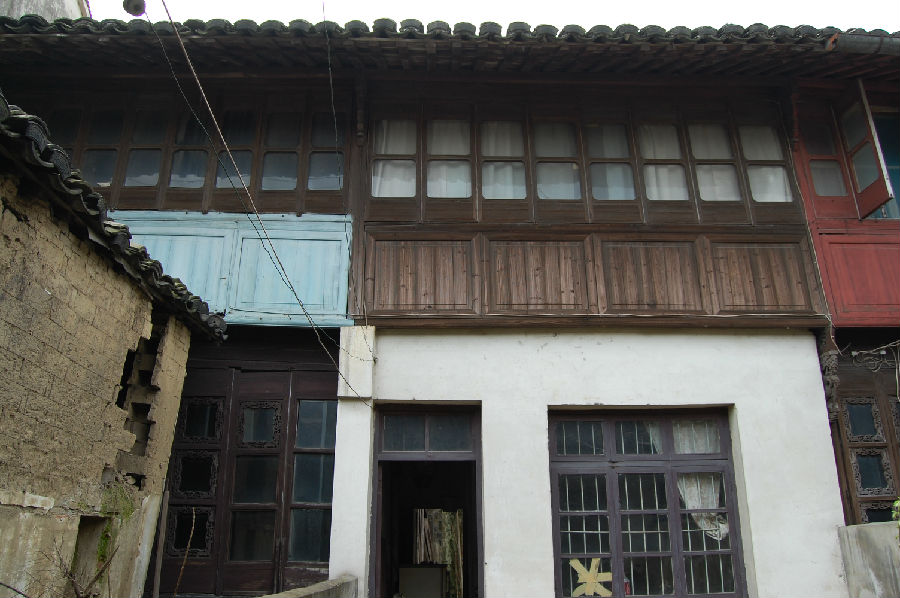

嘉兴市文物保护网 · 市级文物保护点 · 2020-11-06 · 原文

王店施定夫故居位于嘉兴市秀洲区王店镇解放社区188号，建于民国期间。施定夫（1874-1946年）名桢，又字廷辅。少年时曾师从山阴人物画家王鼎年，成年后在上海结识了画家黄宾虹，画艺更上一层楼。施定夫于1911年秋东渡日本，在日侨居13年间，曾任东京“南画会”会长，日本《画家大字典》提及其画艺高超。东京地震后，施定夫于次年回国，定居王店。施定夫擅长人物，仕女，佛像，又精于花，鸟，山，水，用笔湿润而清逸，被《中国美术家人名辞典》收录。施定夫故居坐北朝南，原有三进，现仅存二进二天井，占地面积219平方米，通面阔10.75米，一进为一层，与二进间有天井，天井两侧原有廊，现仅存西侧局部。二进为二层，后存部分天井，当中原有较大砖雕门楼，砖木结构，穿斗式，五檩，牛腿、窗槛，雕花较精，现改为水泥地面。施定夫作为民国时期嘉兴著名画家，故居对于研究施定夫的生平和画理具有较高的历史价值。2009年公布为嘉兴市文物保护点。